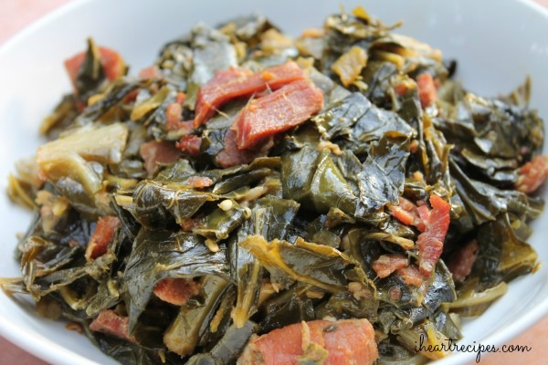

Southern Collard Greens

A must-eat dish on New Year's day.
Ingredients
- 1 1/2 quarts water
- 1 1/2 pounds ham blocks
- 4 pounds collard greens, rinsed and trimmed
- 1/2 teaspoon crushed red pepper flakes
- 1/4 cup vegetable oil
- salt and pepper to taste
Cooking Directions
- Place the water and the ham hock in a large pot with a tight-fitting lid. Bring to a boil. Lower the heat to very low and simmer covered for 30 minutes.
- Add the collards and the hot pepper flakes the pot. Simmer covered for about 2 hours, stirring occasionally.
- Add the vegetable oil and simmer covered for 30 minutes.
Back To Main Page